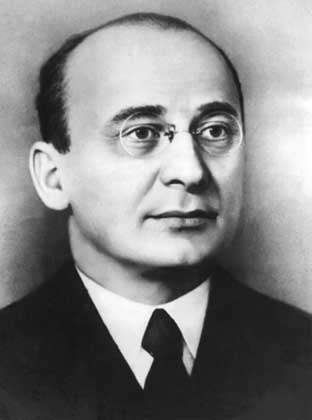

Берия Л.П.

Берия Лаврентий Павлович
Советский государственный и политический деятель, Генеральный комиссар госбезопасности (с 1941 г.). Входил в ближайшее окружение И.В. Сталина. Курировал ряд важнейших отраслей оборонной промышленности, в том числе все разработки, касавшиеся создания ядерного оружия и ракетной техники.
17.03.1899— 23.12.1953
Родился в крестьянской семье. Учился в Бакинском политехническом институте. В марте 1917 г. вступил в РСДРП(б). В том же году Берия мобилизован в армию и направлен на Румынский фронт. В конце 1917 г. вернулся в Баку. В 1918 г. Берия был сотрудником Бакинского совета (Бакинская коммуна), затем помощником А.И. Микояна, который возглавлял большевистское подполье в Азербайджане. В 1920 г. находился в Грузии, где его дважды арестовывали по подозрению в шпионаже в пользу Советской России, а в августе выслали по этапу в Азербайджан. С 1921 г. деятельность Берии протекала в органах госбезопасности Закавказья. С декабря 1926 г. он председатель Грузинского ГПУ и заместитель председателя Закавказского ГПУ. В 1931–1932 гг. – первый секретарь ЦК компартии Грузии, затем руководил Заккрайкомом ВКП(б), который контролировал деятельность компартий Закавказья. В сентябре 1937 г. вместе с направленными из Москвы Г.М. Маленковым и А.И. Микояном провёл «чистку» партийной организации Армении. «Большая чистка» прошла и в Грузии, где были репрессированы многие партийные и государственные работники. Здесь был «раскрыт» т.н. заговор среди партийного руководства Грузии, Азербайджана, Армении, участники которого якобы планировали выход Закавказья из состава СССР и переход его под протекторат Великобритании. В 1938 г. Берия был переведен в Москву. 29 сентября 1938 г. он занял должность начальника Главного управления государственной безопасности НКВД СССР. 25 ноября 1938 г. назначен Наркомом внутренних дел СССР. С 22 марта 1939 г. являлся кандидатом в члены Политбюро ЦК ВКП (б). В 1940 г. Л. Берия был организатором акции по расстрелу польских заключенных и депортаци их родственников. 3 февраля 1941 г. назначен заместителем председателя Совета Народных Комиссаров СССР (СНК). Как заместитель председателя СНК курировал работу НКВД, НКГБ, наркоматов лесной и нефтяной промышленности, цветных металлов, речного флота. В годы Великой Отечественной войны Л.П. Берия входил в состав Государственного Комитета Обороны (ГКО) (с 30 июня 1941 г.). В руках ГКО была сосредоточена вся полнота власти в стране. Постановлением ГКО от 8 декабря 1942 Л.П. Берия назначен членом важнейшего подразделения ГКО — Оперативного бюро ГКО. В мае 1944 года он становится заместителем председателя ГКО и председателем Оперативного бюро. Помимо прочего, Берия занимал должность постоянного советника Ставки Главного Командования Вооружённых сил СССР. 11 февраля 1943 г. И.В. Сталин подписал решение Государственного Комитета Обороны о программе работ по созданию атомной бомбы под руководством В.М. Молотова. Но уже в постановлении ГКО СССР о лаборатории И.В. Курчатова, принятом 3 декабря 1944 г., именно Л.П. Берии поручалось «наблюдение за развитием работ по урану». Л.П. Берия, с одной стороны, руководил получением всей необходимой разведывательной информации, с другой стороны — осуществлял общее руководство всем проектом. 29 августа 1949 г. атомная бомба успешно прошла испытание на Семипалатинском полигоне. 29 октября 1949 г. Л.П. Берии была присуждена Сталинская премия I степени «за организацию дела производства атомной энергии и успешное завершение испытания атомного оружия».
В период Великой Отечественной войны Берией были осуществлены депортации целых народов, проживающих на территории СССР. Так, депортированы представители народов, страны которых входили в гитлеровскую коалицию (венгры, болгары, многие финны). Официальной причиной депортации были массовое дезертирство, коллаборационизм и активная антисоветская вооружённая борьба. 21 февраля 1944 г. Лаврентий Берия издал приказ по НКВД о депортации чеченцев и ингушей. 20 февраля вместе с И.А. Серовым, Б.З. Кобуловым и С.С. Мамуловым Берия прибыл в Грозный и лично руководил операцией. 26 февраля издан приказ по НКВД «О мероприятиях по выселению из КБ АССР балкарского населения». Другой крупной акцией стала депортация турок-месхетинцев, а также проживавших в приграничных с Турцией районах курдов и хемшинов. А 24 августа 1944 г. вышел приказ НКВД за подписью Берии «О выселении из городов Кавмингруппы курортов семей активных немецких пособников, предателей и изменников Родины, добровольно ушедших с немцами».
9 июля 1945 г., при замене специальных званий госбезопасности на воинские, Л.П. Берии присвоено звание Маршала Советского Союза. 6 сентября 1945 года было образовано Оперативное бюро СНК СССР, председателем которого был назначен Л. П. Берия. В задачи Оперативного бюро СНК входили вопросы работы промышленных предприятий и железнодорожного транспорта. 29 декабря 1945 г. Л.П. Берия освобождён от должности главы НКВД. С марта 1946 г. Берия входит в состав «семёрки» членов Политбюро, включавшей И.В. Сталина и шесть приближённых к нему лиц. На этот «ближний круг» замыкались важнейшие вопросы государственного управления, в том числе: внешняя политика, внешняя торговля, госбезопасность, вооружения, функционирование вооружённых сил. 18 марта Берия становится членом Политбюро, а на следующий день назначается заместителем председателя Совета Министров СССР. Как заместитель председателя Совета министров курировал работу МВД, МГБ и министерства государственного контроля. В марте 1949 — июле 1951 гг. произошло резкое усиление позиций Л.П. Берии в руководстве страны, чему способствовало успешное испытание первой в СССР атомной бомбы. После состоявшегося в октябре 1952 г. XIX съезда КПСС Л.П. Берия был включён в Президиум ЦК КПСС, заменивший прежнее Политбюро, в Бюро Президиума ЦК КПСС и в созданную по предложению И.В. Сталина «руководящую пятёрку» Президиума. 5 марта 1953 г., сразу после смерти Сталина, состоялось Совместное заседание Пленума Центрального Комитета Коммунистической партии Советского Союза, Совета Министров Союза ССР, Президиума Верховного Совета СССР. На этом заседании Л.П. Берия от имени Бюро Президиума ЦК КПСС предложил избрать на пост председателя советского правительства Г.М. Маленкова. Это предложение было единогласно поддержано собранием. В тот же день, Л.П. Берия был назначен первым заместителем Председателя Совета Министров СССР и министром внутренних дел СССР. Вновь образованное МВД объединило ранее существовавшие МВД и Министерство государственной безопасности. 9 марта 1953 г. Л.П. Берия участвовал в похоронах И.В. Сталина, с трибуны Мавзолея произнёс речь на траурном митинге. Л.П. Берия наряду с Н.С. Хрущёвым и Г.М. Маленковым стал одним из главных претендентов на лидерство в стране. В борьбе за лидерство Л.П. Берия опирался на силовые ведомства. 26 марта Лаврентий Берия направил в Президиум ЦК КПСС записку об амнистии, в результате чего 27 марта Президиум Верховного совета СССР издал указ «Об амнистии», согласно которому подлежали освобождению свыше трети заключённых в СССР. 4 апреля Берия подписал приказ N 0068 за грифом совершенно секретно «О запрещении применения к арестованным каких-либо мер принуждения и физического воздействия». Однако, усиление Л.П. Берии, отсутствие у него союзников в высшем партийном руководстве привели к его падению. Членам Президиума ЦК по инициативе Н.С. Хрущёва было объявлено, что Л.П. Берия планирует провести государственный переворот и арестовать Президиум на премьере оперы «Декабристы». На июльском пленуме ЦК КПСС почти все члены ЦК выступили с заявлениями о вредительской деятельности Л. Берии. 7 июля постановлением пленума ЦК КПСС Берия был освобождён от обязанностей члена Президиума ЦК КПСС и выведен из состава ЦК КПСС. 23 декабря 1953 г. Л.П. Берия предстал перед Специальным судебным присутствием Верховного Суда СССР вместе с некоторыми своими бывшими сотрудниками из органов госбезопасности. Все обвиняемые были приговорены к смертной казни и в тот же день расстреляны. Берия был обвинён в шпионаже в пользу Великобритании и других стран, стремлении к ликвидации Советского рабоче-крестьянского строя, реставрации капитализма и восстановлению господства буржуазии. Его также обвинили в моральном разложении, злоупотреблении властью и в фальсификации тысяч уголовных дел на своих сослуживцев в Грузии и Закавказье, организации незаконных репрессий.
| Беленький А.Я.< Предыдущая | Следующая >Блюхер В.К. |
|---|